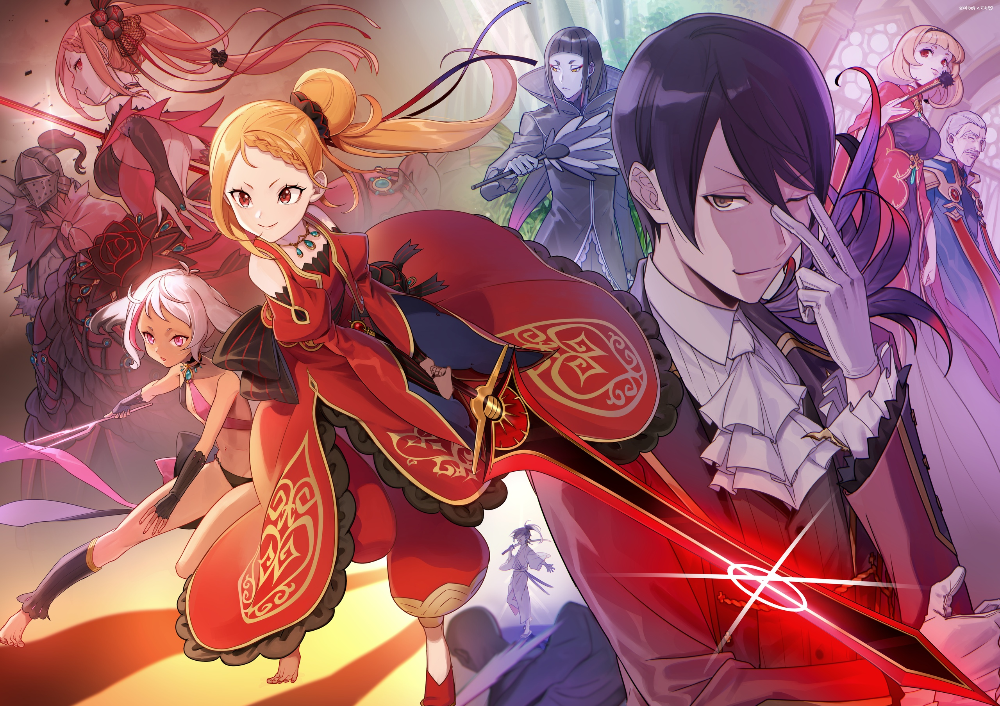

Арка VII: Земля волков
Субару просыпается в незнакомом ему месте. Рядом нет никого кроме Рем и... Луис Арнеб. Даже дурак поймёт, что находится далеко от песков Аугрии. Но как они попали туда? А что важнее, как вернуться назад?
Субару просыпается в незнакомом ему месте. Рядом нет никого кроме Рем и... Луис Арнеб. Даже дурак поймёт, что находится далеко от песков Аугрии. Но как они попали туда? А что важнее, как вернуться назад?